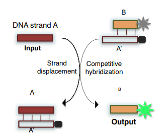

El fin ulterior de mirar el mundo con los ojos de un ingeniero y el objetivo central de este curso se puede sintetizar en una frase: ¿Podemos programar cosas para hacer trabajo útil por nosotros?
En este curso se proyectará esta mira sobre microorganismos vivos:
Bacterias para defendernos de otros microorganismos
Virus para producir vacunas por nosotros
Bacterias que produzcan un cierto químico
Células preparadas para evitar enfermedades
La inteligencia artificial in vivo, es decir, la programación de comportamiento inteligente en computadoras vivas, constituye una de las ramas de investigación principales en biología programable, pudiendo ser usadas para diagnóstico y abastecimiento de medicinas in vivo.
La estructura del ADN
La molécula de ADN es una doble hélice compuesta de un esqueleto formado por dos hebras de fosfato (azúcares) que contienen la información genética necesaria para la vida y reproducción de una célula codificada mediante cuatro bases nitrogenadas: Adenina, Timina, Citosina y Guanina, que, tal y como demostraron Watson y Crick, son complementarias, es decir, las moléculas de Adenina (A) siempre aparecen ligadas a moléculas de Timina (T) y las de Citosina (C) con moléculas de Guanina (G), de modo que una de las hebras contiene toda la información genética codificada mientras que la otra, contiene la misma información pero escrita en su forma complementaria. Esta redundancia de la molécula de ADN existe para corregir mutaciones.
La molécula de ARN tiene una estructura análoga, pero emplea Uracilo en lugar de Timina.
Las dos hebras de una molécula de ADN no son simétricas, sino que tienen extremos diferentes (llamados 3’ y 5’), con propiedades químicas distintas.
La molécula de ADN contiene el sistema operativo de una célula, es decir, el genoma. Todo el genoma de un humano está almacenado en poco menos de 3GB de información. Para una bacteria, mucho más simple, este peso es mucho menor, siendo de tan solo algunos MB para la bacteria E-coli, una de las más utilizadas para computación biológica (de hecho, hay quien la ha clasificado como el arduino de la biología).
Un gen es una pieza de ADN que codifica una proteína completa. Las proteínas son la máquina biológica que realiza todas las funciones de una célula, y para producirlas, una célula debe ser capaz de leer y replicar su información genética. Las bacterias E-coli tienen del orden de 4000 genes, luego son capaces de producir hasta 4000 proteínas diferentes. Las células humanas contienen hasta 25000 genes. En términos matemáticos esto implica que el genoma humano puede ser representado como un grafo de alrededor de 25000 nodos con una infinidad de arcos conectándolos, muchos de ellos aún no comprendidos. De hecho, incluso para los tan solo 4000 genes de la bacteria E-coli, hay sectores del genoma que aún no comprendemos.
Operaciones sobre ADN
Hoy en día podemos hacer un gran conjunto de operaciones con ADN:
Síntesis (escritura) y secuenciación (lectura)
Hibridación de bases complementarias
Desnaturalización de una molécula de ADN (separación de las hebras)
Corte de una molécula de ADN
Separación por longitud por electrofóresis en gel, pues las cadenas más largas se mueven más lentamente en un gel al aplicar un campo eléctrico
Extracción de un sector de ADN seleccionándolo por unión con su complementario
Copia de ADN por polimerización con ADN-polimerasa (la ADN-polimerasa humana es muy precisa, la viral lo es mucho menos, pues tienen muchos descendientes y les conviene explorar muchas mutaciones diversas rápidamente y la de la bacteria E-coli, capaz de replicar sus 4000 genes en unos pocos minutos, tan solo causa uno o dos errores)
Amplificación por Reacción de Polimerasa en Cadena (PCR), que funciona como una suerte de fotocopia de ADN, duplicando la cantidad de ADN en cada ciclo
Transcripción, o generación de la molécula de ARN correspondiente de un segmento de ADN y transcripción inversa (o retrotranscripción)
Detección de ADN basada en desplazamiento de un segmento (strand displacement), utilizando un segmento de ADN parcialmente hibridizado de la secuencia que se quiere detectar, de modo que el segmento que corresponde a la hibridación perfecta competirá y ganará (termodinámicamente, pues ofrece complementaridad completa), liberando la cadena parcialmente hibridizada, que puede portar una baliza inhibida por el segmento original, de forma que cuando se libera alerta de la existencia de una coincidencia
Ejemplo de detección de ADN: autómata biomolecular
En este ejempo, a partir de un sensor de ADN se construye una molécula capaz de diagnosticar medicar que, al detectar un segmento de mRNA que asegura un diagnóstico, desinhibe un medicamento que lo trata.
Computación biomolecular
Llamamos computación biomolecular al procesamiento de información con el uso de biomoléculas. La computación con biomoléculas como el ADN no pretende reemplazar la computación digital (jamás tendremos un PC de computación biomolecular corriendo office en un escritorio), y de hecho, ni siquiera apunta a competir con ésta en potencia, pero tiene prometedoras aplicaciones:
Control de dispositivos biomoleculares
Procesamiento de información biológica in vivo o in vitro
Realización de operaciones dentro de células u otros organismos vivos
L. Adleman fue uno de los pioneros en el uso de algoritmos biológicos con computación biomolecular para resolver problemas combinatorios, como el del camino hamiltoniano direccionado (1994), que se formula como:
Dado un grafo dirigido G=(V,A) con n arco, ¿Es cierto que siempre existe un camino Hamiltoniano (una secuencia de arcos e1,...,en) comenzando en un vértice inicial Vin y terminando en Vfin que pasa por todos los demás sólo una vez?
Por ejemplo, para el problema del viajero aplicado sobre una serie de ciudades españolas y un plan de vuelos, se podría usar el código de Adleman sobre ADN codificando cada ciudad (nodos de la red) como un determinado segmento de ADN y, empleando las propiedades de direccionalidad e hibridación del ADN, codificar los vuelos disponibles (arcos de la red) como un segmento de ADN compuesto en su mitad 5’ por la ciudad de partida y en su mitad 3’ por la de llegada, de modo que cuando se juntan todas las piezas y se dejan reaccionar se puede obtener una hebra de ADN codificando el camino hamiltoniano, que debe seleccionarse de entre aquellas que comienzan y acaban en los nodos especificados como inicial y terminal.
El modelo de computación de Adleman
El sistema utilizado en el problema anterior para resolver el problema del viajero se conoce como el modelo de computación con ADN de Adleman, y se pueden sintetizar sus componentes como sigue:
Entrada (input): Las soluciones a un problema codificadas como hebras de ADN en un tubo de ensayo
Memoria: El tubo de ensayo contenedor de las hebras de ADN
Programa: La secuencia de operaciones que se efectúan de forma externa sobre las hebras de ADN
Computación: La secuencia de reacciones que sucede en el tubo de ensayo
Solución: El contenido final del tubo
Los programas en el modelo de computación de Adleman no se almacenan. La computación se realiza por fuerza bruta, mediante sucesivas filtraciones en un proceso de búsqueda y construcción.
Dispositivos basados en strand displacement
El concepto central del mecanismo de desplazamiento de hebras es la competición entre diferentes hebras de ADN parcialmente complementarias de modo que, por medio de procesos termodinámicos, un segmento de hebra de ADN de entrada (input) puede desplazar una cadena parcialmente complementaria de un complejo molecular cuya configuración preferida (de máxima complementareidad) se obtiene al hibridizarse con la hebra de entrada, sometiendo la hebra parcialmente complementaria a un proceso de migración de hebra.
Para que se produzca la migración de la hebra parcialmente complementaria, es necesario que su emparejada tenga un segmento libre, un toehold o punto de apoyo, al que pueda conectarse la hebra de entrada.
Este tipo de dispositivos permiten diseñar puertas lógicas con cadenas de ADN como inputs y outputs, mientras que los valores de los estados binarios 1 y 0 vendrán dados en términos de la presencia o ausencia de una determinada molécula (con este propósito uno debe establecer un umbral de concentración). Una vez se pueda diseñar con estos sistemas una puerta lógica AND o, equivalentemente, NAND, que son con las que trabajan la mayoría de computadoras modernas, se podrá implementar cualquier circuito lógico.
Una puerta lógica AND programada con ADN se puede implementar mediante una reacción en cadena de entradas A y C y salida D, de forma que la presencia de A libera una hebra B de una molécula parcialmente hibridizada con su complementario A′ que su vez, puede hibridizarse con una cadena B′, lo que permite liberar un detector C′D de la presencia de C, por lo que sólo en presencia de ambas entradas se liberará la molécula D.
PER: Primer Exchange Reaction Mechanism
El mecanismo PER es una de las pocas maneras que existen para producir hebras de ADN con secuencias prescritas arbitrariamente de forma automatizada. Las cascadas de PER funcionan de forma isotérmica, produciendo una hebra de ADN preprogramada en una proceso secuencial por pasos con la ayuda de una polimerasa de desplazamiento de cadenas (strand displacement).
La reacción comienza con un pequeño fragmento de hebra que constituye el primer ladrillo sobre el que se construirá la cadena, el partidor (primer). Este partidor (a) puede unirse por complementareidad a una horquilla (hairpin) formada por un segmento de ADN (de doble hebra) correspondiente a la siguiente secuencia que se quiere añadir al partidor (b) y su complementario (b’), así como del complementario del partidor. Posteriormente, una polimerasa replica el fragmento b a partir de b’ extendiendo el partidor a hasta que llega a la secuencia de parada. Finalmente, se produce un proceso de migración de hebra, pues el fragmento b original desplaza al recién creado, desligando la secuencia extendida y liberando la horquilla para interactuar con otro partidor.
Este proceso se puede encadenar empleando el partidor extendido como un nuevo partidor para otra reacción PER, obteniendo así la secuencia deseada:
{kind=link}